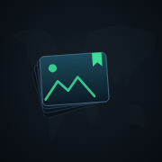

V5 · 叠放照片 × 点阵世界
四张照片错位叠放 + 点阵世界地图打底，收藏角标点明「精选」
叠放 · 世界底图
叠放
4 层，旋转 −17° → −4°，逐层错位 10px
地图
点阵填充（11px 间距），30% 不透明
山脊
#3DDC97 · 15px
角标
#3DDC97 书签，贴卡片右上
底图
#070C11 → #151E27
尺寸检查

180 · 桌面
120
60 · 设置页
叠放怎么做出体积感
：四张卡片的旋转角度逐层递减（−17 → −12 → −7 → −4）， 位移也逐层缩小（−38 → −23 → −11 → 0），越靠后越暗、描边越弱 —— 这样看起来是「一叠」而不是「几个框」。
地图怎么变明显
：不用逐个画点（会稀疏），改成
11px 间距的点阵图案 + 大陆轮廓裁切
， 点密到能连成「面」，同时文件只有 2KB。
取舍
：60px 时层叠边缘会糊掉，但「照片 + 山 + 书签」三个主特征还在。